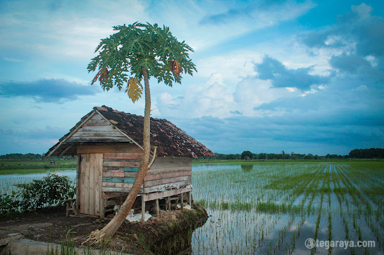
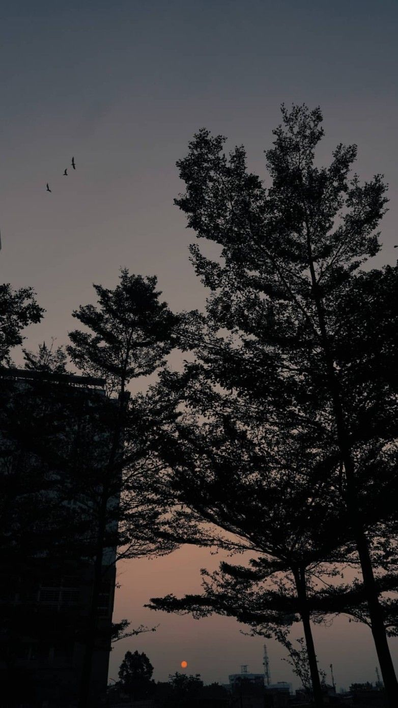
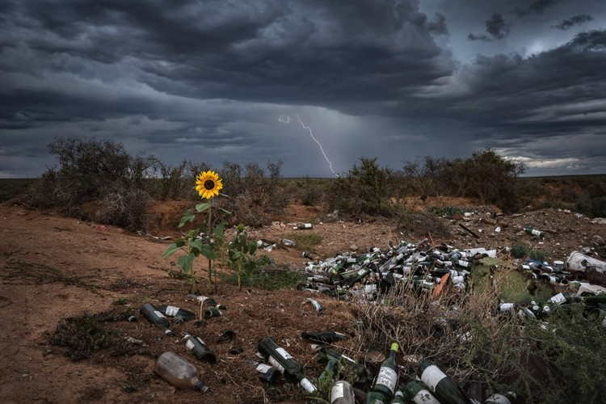

Prima Hadi G
SKILLS
DATABASE
PYTHON
C++
PHOTOGRAPHER
Nama : Prima Hadi Gunawan
Profile : Database Engineer
Email : primaid554@gmail.com
Phone : (+62)895-6060-75185
--About--
Mahasiswa Teknik Informatika yang antusias dan bermotivasi tinggi dengan kemampuan kepemimpinan, inisiatif, dan mencari tantangan baru. Berpengalaman dalam bidang Fotografi dan Database.
PHOTO RESULTS




SERVICE
FOTOGRAFI
proses atau metode untuk menghasilkan gambar atau foto dari suatu objek dengan merekam pantulan cahaya yang mengenai objek tersebut pada media yang peka cahaya. Alat paling populer untuk menangkap cahaya ini adalah kamera.
DATABASE ENGINEER
Database engineer merupakan seseorang yang bertanggung jawab terhadap pengumpulan data-data digital untuk kemudian dianalisis oleh tim data analyst.
FUTSAL
Futsal adalah permainan bola yang dimainkan oleh dua regu, yang masing- masing beranggotakan lima orang. Tujuannya adalah memasukkan bola ke gawang lawan, dengan memanipulasi bola dengan kaki dan anggota tubuh lain selain tangan, kecuali posisi kiper.